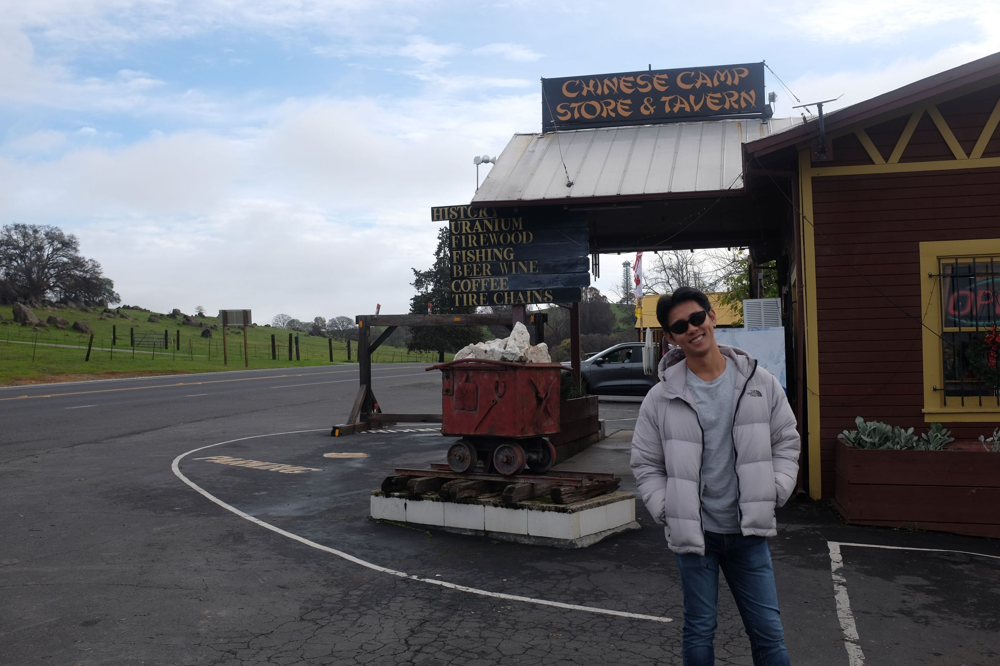
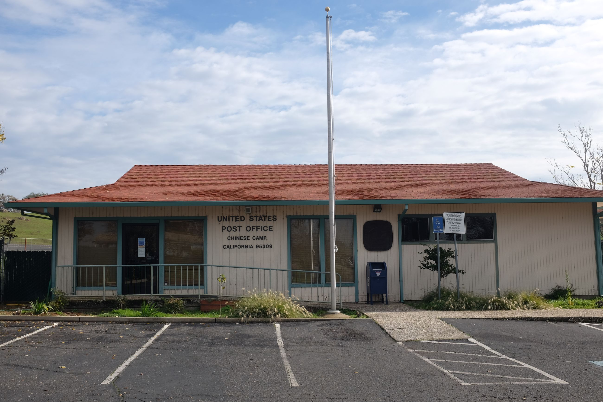

From the missions nearer the coast, we head inland into the old gold rush towns.
We drive by rows and rows of agriculture that go on for miles. We also see the odd winery, to which we think, "who comes out here"? Eventually, we start a mild ascent into a mountain then descend slowly into Chinese Camp, California.
This town was built, as suggested by the name, by several Chinese workers in the late 1800's. The town now, however, had mostly white residents. On our way in, we see many burned houses. At the edge of the town near the freeway, there is one shop called Chinese Tavern. There is the old Qing Dynasty flag hanging outside alongside the American one. We enter.

Inside is a lady named Kim who is Vietnamese. She married into the city, and has been running this general store for 7 years. It's a shop full of random souvenir, from military pins to postcards. On the side, a tattered wooden sign that reads "No one under 21 allowed" hanging off the bar table -- it's a makeshift bar selling alcohol.
Kim tells us that a fire, started by lightning, swept through the town four months ago (September 2025) and destroyed much of the houses. The fire patrol were responding to many fires that day and prioritised this one relatively late, resulting in only charred skeletons of what seemed like a building. I only managed to take pictures of the post office since it didn't feel right taking picture of recent trauma.

There is a quiet eeriness here, despite it being sunny. Tenting communities are there where houses look like they once were since the fire. Just as quietly as we entered, we quietly left...